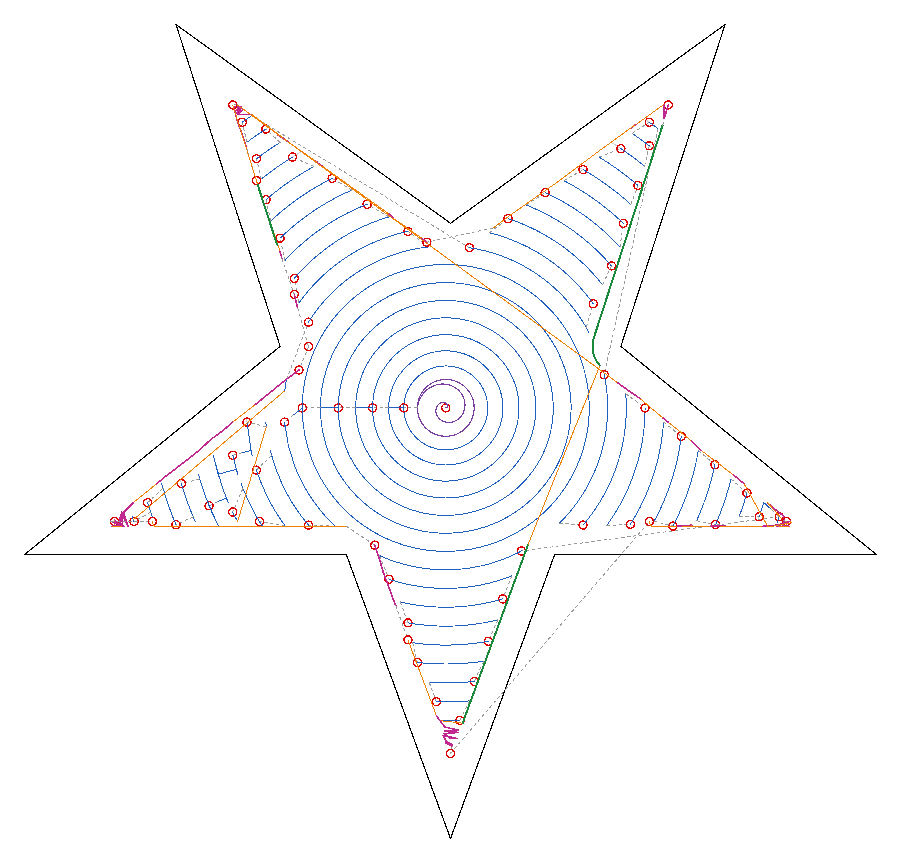
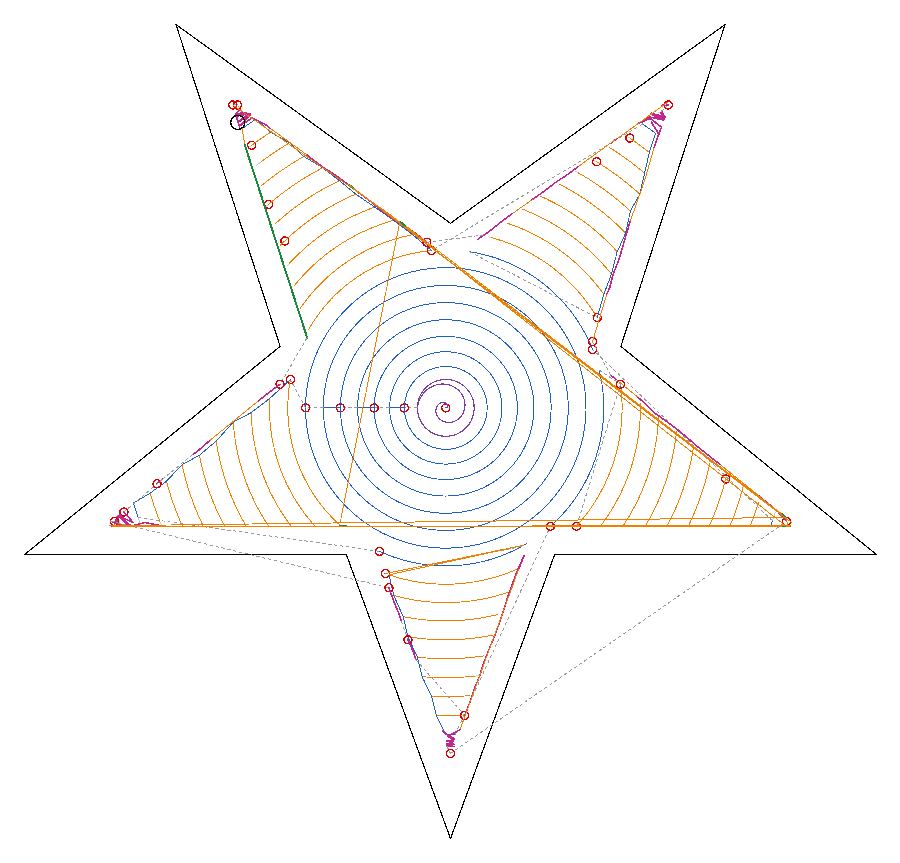
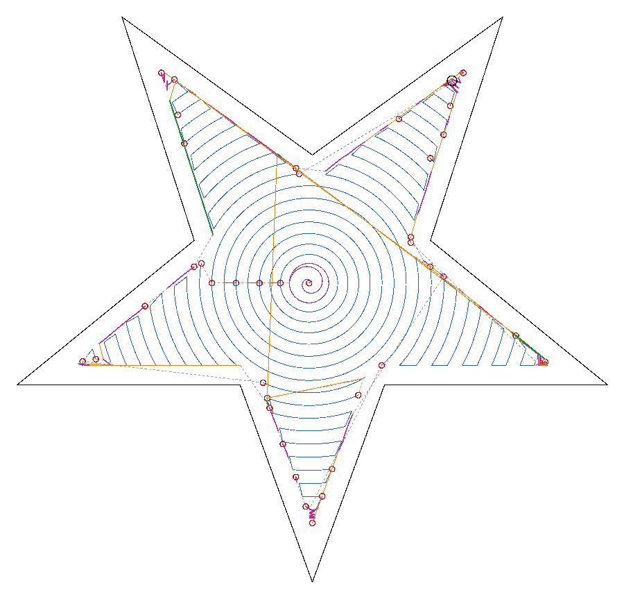
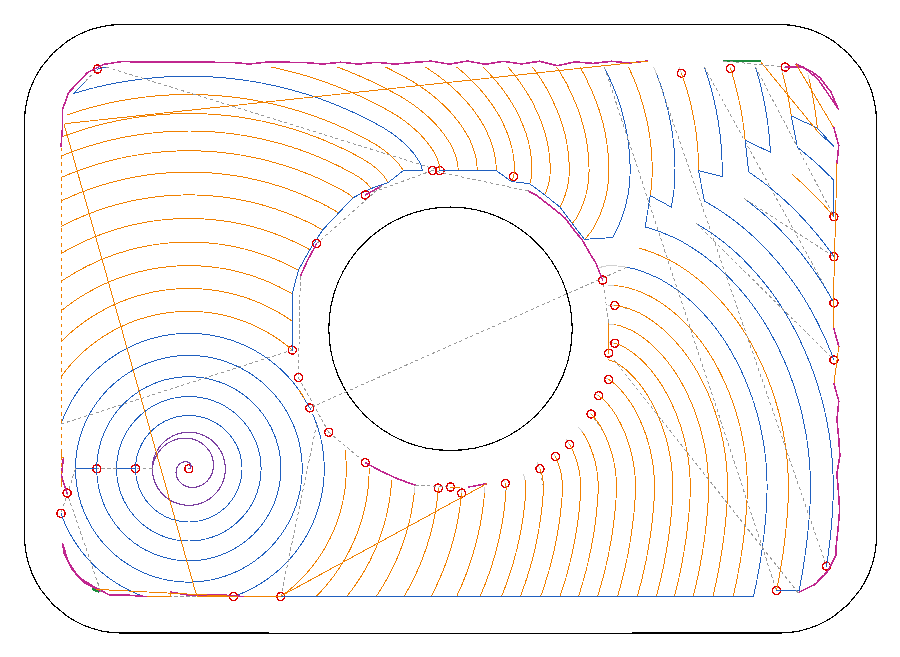
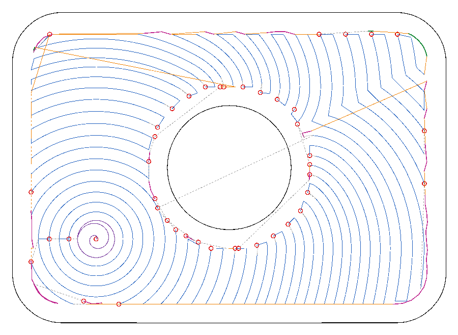

Colours: blue = clearing cuts, orange = keep-down links at depth, magenta = residue passes, green = wall pass, red rings = entries (plunges). A turn at an arc end may go over the steady load ceiling (your ruling): at most 3.2 mm long, feed cut by its engagement. Real Rust planner output, not a Python sketch. No ranking.
v4 state: plain seam (73 / 63 plunges)

star / geodesic_curv
pieces: 1
cut length: 1051.5 mm
keep-down links: 98 (236.7 mm)
entries (plunges): 73
retracts (lifts to safe Z, last included): 73
pass load (planner readout, replay measure SweptWidth): max 0.3581 vs ceiling 0.3626; 0 of 2716 steps over; 0 exempt plunge-departure steps
both measures of the emitted steps (fraction of D, ceiling 0.3626): swept width max 0.3581, 0 over; area per mm max 0.6094, 822 over
entries by producer: starter 1, clearing at a lead-in (L) 0, clearing at a wrap end (join) 58, clearing mid-wrap (replay split) 0, residue contour 0, wall pass 0, residue mop 14, other 0
(a) spacing + one-way climb + keep-down return + turns

star / geodesic_local_oneway
pieces: 1
cut length: 1193.4 mm
keep-down links: 1129 (967.4 mm)
entries (plunges): 34
retracts (lifts to safe Z, last included): 34
pass load (planner readout, replay measure SweptWidth): max 0.8720 vs ceiling 0.3626; 1 of 4140 steps over; 0 exempt plunge-departure steps
both measures of the emitted steps (fraction of D, ceiling 0.3626): swept width max 0.8720, 91 over; area per mm max 0.9729, 1034 over
entries by producer: starter 1, clearing at a lead-in (L) 0, clearing at a wrap end (join) 19, clearing mid-wrap (replay split) 0, residue contour 0, wall pass 0, residue mop 14, other 0
steps on no turn (emitted): max 0.4638 vs ceiling 0.3626, 1 over
clearing turns (emitted): 45 of 45 planned; 90 turn steps, 90 over the ceiling (the counted exemption); turns with the reduced feed 45, without 0
(a) spacing + zigzag (both directions) + turns

star / geodesic_local_zigzag
pieces: 1
cut length: 1173.0 mm
keep-down links: 59 (251.2 mm)
entries (plunges): 38
retracts (lifts to safe Z, last included): 38
pass load (planner readout, replay measure SweptWidth): max 0.8722 vs ceiling 0.3626; 1 of 2852 steps over; 0 exempt plunge-departure steps
both measures of the emitted steps (fraction of D, ceiling 0.3626): swept width max 0.8722, 89 over; area per mm max 0.9729, 1047 over
entries by producer: starter 1, clearing at a lead-in (L) 0, clearing at a wrap end (join) 23, clearing mid-wrap (replay split) 0, residue contour 0, wall pass 0, residue mop 14, other 0
steps on no turn (emitted): max 0.4509 vs ceiling 0.3626, 1 over
clearing turns (emitted): 45 of 46 planned; 90 turn steps, 88 over the ceiling (the counted exemption); turns with the reduced feed 45, without 0
v4 state: plain seam (73 / 63 plunges)

pocket / geodesic_curv
pieces: 1
cut length: 1343.7 mm
keep-down links: 173 (382.7 mm)
entries (plunges): 63
retracts (lifts to safe Z, last included): 63
pass load (planner readout, replay measure SweptWidth): max 0.4677 vs ceiling 0.3626; 2 of 3250 steps over; 0 exempt plunge-departure steps
both measures of the emitted steps (fraction of D, ceiling 0.3626): swept width max 0.4677, 2 over; area per mm max 0.6094, 817 over
entries by producer: starter 1, clearing at a lead-in (L) 0, clearing at a wrap end (join) 34, clearing mid-wrap (replay split) 12, residue contour 6, wall pass 0, residue mop 10, other 0
(a) spacing + one-way climb + keep-down return + turns

pocket / geodesic_local_oneway
pieces: 1
cut length: 1488.2 mm
keep-down links: 2029 (975.3 mm)
entries (plunges): 41
retracts (lifts to safe Z, last included): 41
pass load (planner readout, replay measure SweptWidth): max 0.9670 vs ceiling 0.3626; 0 of 5559 steps over; 0 exempt plunge-departure steps
both measures of the emitted steps (fraction of D, ceiling 0.3626): swept width max 0.9670, 86 over; area per mm max 1.1353, 1126 over
entries by producer: starter 1, clearing at a lead-in (L) 0, clearing at a wrap end (join) 29, clearing mid-wrap (replay split) 0, residue contour 0, wall pass 0, residue mop 11, other 0
steps on no turn (emitted): max 0.3574 vs ceiling 0.3626, 0 over
clearing turns (emitted): 50 of 50 planned; 96 turn steps, 86 over the ceiling (the counted exemption); turns with the reduced feed 49, without 0
(a) spacing + zigzag (both directions) + turns

pocket / geodesic_local_zigzag
pieces: 1
cut length: 1443.1 mm
keep-down links: 111 (211.0 mm)
entries (plunges): 44
retracts (lifts to safe Z, last included): 44
pass load (planner readout, replay measure SweptWidth): max 0.9373 vs ceiling 0.3626; 0 of 3580 steps over; 0 exempt plunge-departure steps
both measures of the emitted steps (fraction of D, ceiling 0.3626): swept width max 0.9373, 85 over; area per mm max 1.1474, 1146 over
entries by producer: starter 1, clearing at a lead-in (L) 0, clearing at a wrap end (join) 30, clearing mid-wrap (replay split) 0, residue contour 0, wall pass 0, residue mop 13, other 0
steps on no turn (emitted): max 0.3625 vs ceiling 0.3626, 0 over
clearing turns (emitted): 59 of 59 planned; 109 turn steps, 85 over the ceiling (the counted exemption); turns with the reduced feed 56, without 0